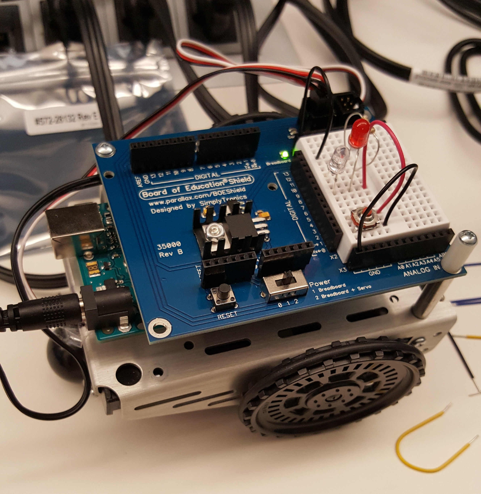
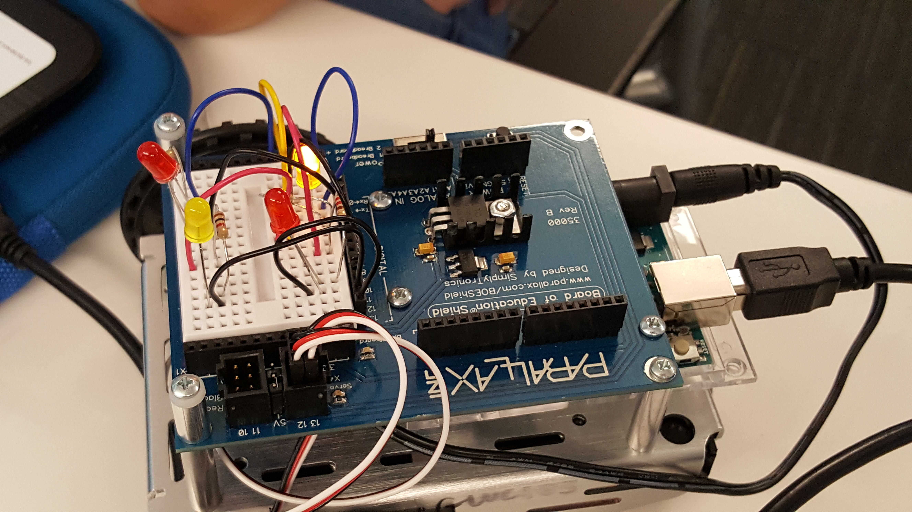
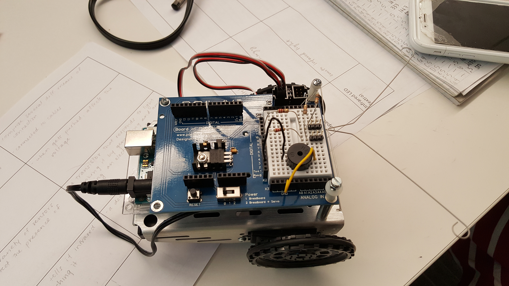

Hi! I am Ankita Nayak. I am an incoming junior at Dougherty Valley High School. I do taekwondo, a type of martial art. I am a second degree black belt. I love competing at tournements for taekwondo. I enjoy reading. Whenver I have the time, I pick up a book and start to read.
Reflection - 7/6/17
Similarites in Python and Scratch are that both contain variables, loops, pen statements, user inputs, etc. A difference is that in Python today the loop that we learned was a 'for' loop, which is a little different from the repeat block in Scratch. But both execute similarly.
Debugging was nice, especially the feeling once you it right. From debugging, I was able to catch on to my mistakes and not make them again. At times though it was hard to figure out what to do, but the python interpreter notifies you of what needs to be fixed.

The most complicated circuit my group and I were able to construct is the one shown in the picture. When you press the button, both of the LEDs light up. Some of the bumps we faced was trying to get both of the LEDs to light up. With the help of our classmates we were able to fix this by placing the LEDs parallel. This way both of the LEDs are connected to a jumper wire and a resistor. Working in a group is really nice. We were able to give our opinions regarding the problems we faced and came up with solutions to fix them together.
Reflection - 7/10/17
I think my idea of robotics over all has stayed the same. I just found a new way to define to them. There are many things that robots can help us with later in the future. But at the same time, we might be fearful of the outcome of robots: especially if they are put into the hands of someone who would use the technology for bad uses.
In our group, we were able to work together very efficiently. We didn't mess around and paid attention to the task at hand. We were able to collaborate and share ideas. No one was left out. I believe that my group worked very well together.
Light Show

My group and I tried to make the four LEDs blink one after another. This we were able to complete successfully. From today's project I was able to learn many new things. Some of them are how to use arrays and for loops in c++. Both help to simplify the code. I also learned that there different types of resistors. Some allow the LEDs to glow brightly while others don't. Overall, this is a very fun project.
Reflection - 7/12/17
Something that both Manuela Veloso and Ayanna Howards have in common is that they make robots that can be beneficial to others and the society.
My team was able to work together on the lightshow. We let each other give opinions on how to fix the problems we were facing. Our teamwork overall was great and we collaborated effectively.
The basic pieces of every Arduino program is the setup and the loop. The setup is you put in your setup code which only runs once. The loop is where you put in your main code which runs repeatedly.
Reflection - 7/13/17
Someting I learned about circuits that I had not known before was about power and ground. I did not know that those were important for circuits and are a main part for them to function.
My favorite part of the robot dance was it singing. My group made our robot sing Rather Be, which was really cool. I also enjoyed watching all the other groups'robots perform. I was fun.
Ouputs that Manuela Veloso and Ayanna Howard need for their robots includes the specific movement the robots are required to accomplish.
Escape Bot

From this escape bot project, I learned how the Arduino sensors work and how to control them. My group went through a whole trial-and-error process. We had to try different ways to get the robot to go through the obstacle course. We were able to make it turn left but not right. Overall, we were able to copperate and had fun while trying to figure out the problems we faced along the way.
Reflection - 7/18/17
A list can store different types of data. Lists can be used for many things. In terms for this project 'Obamicon', a list was used to store the pixels of an image.
Whichever group I am working with all strive to help each other and get through the problems they face together. In this project especially, getting help from others really helped because at the beginning I was really confused to as to how to begin. But with the help of my group I was able to get started and understood the concepts.